خوشه دانشی
پژوهش و انتشار
از پرسش پژوهش و آمادگی مقاله تا ویرایش دانشگاهی، انتخاب مجله، داوری و مسیر دانشگاهی.
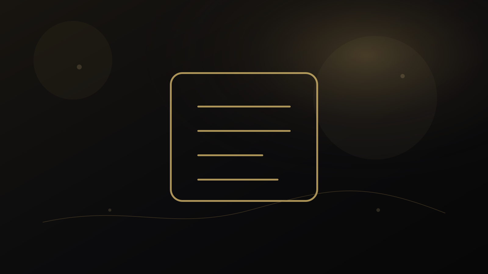
راهنمای پژوهش و انتشار
چرا مقاله من آماده ارسال نیست؟ بازبینی تشخیصی مقاله پیش از Submit
بازبینی تشخیصی مقاله چیست؛ چگونه استدلال، انسجام، جایگاه پژوهش، گزارش روش و آمادگی ارسال را پیش از ویرایش خطبهخط ارزیابی کنیم.

راهنمای پژوهش و انتشار
ویرایش انگلیسی دانشگاهی چیست و چه تفاوتی با Grammar Correction دارد؟
ویرایش انگلیسی دانشگاهی فراتر از اصلاح گرامر است؛ وضوح استدلال، انتخاب واژگان، پیوند جملهها، لحن علمی و تناسب با ژانر مقاله باید در کنار صحت زبانی دیده شوند.
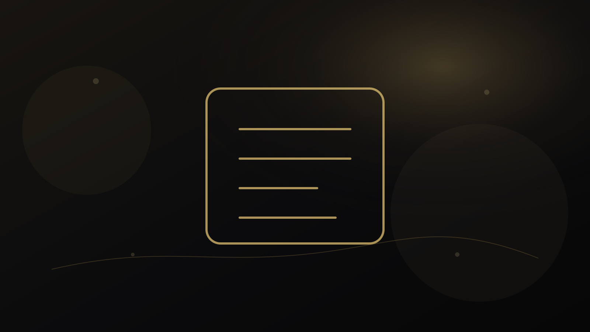
راهنمای پژوهش و انتشار
مشاوره پژوهشی برای پایاننامه و مقاله؛ چه زمانی قضاوت علمی لازم میشود؟
مشاوره پژوهشی برای پرسش، طراحی، روش، شواهد و تفسیر؛ چگونه از گفتوگوی علمی استفاده کنیم بدون اینکه مسئولیت پژوهش به مشاور واگذار شود.
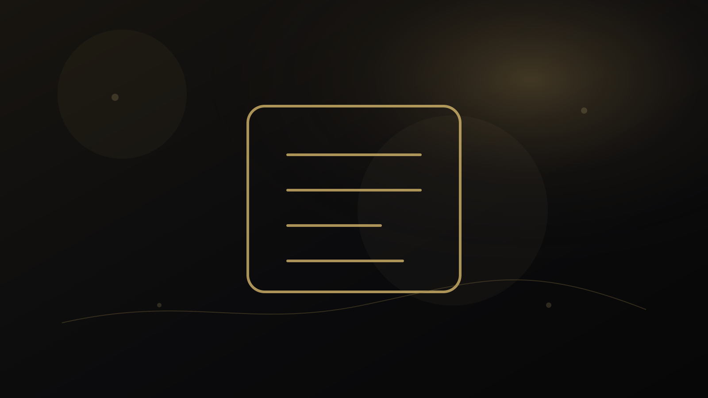
راهنمای پژوهش و انتشار
چگونه مجله مناسب مقاله را انتخاب کنیم؟ راهنمای Journal Selection و Submission Strategy
راهنمای انتخاب مجله مناسب مقاله؛ تطبیق scope، مخاطب، نوع مقاله، سطح ادعا، الزامات، اعتبار و راهبرد ارسال بدون تضمین پذیرش.
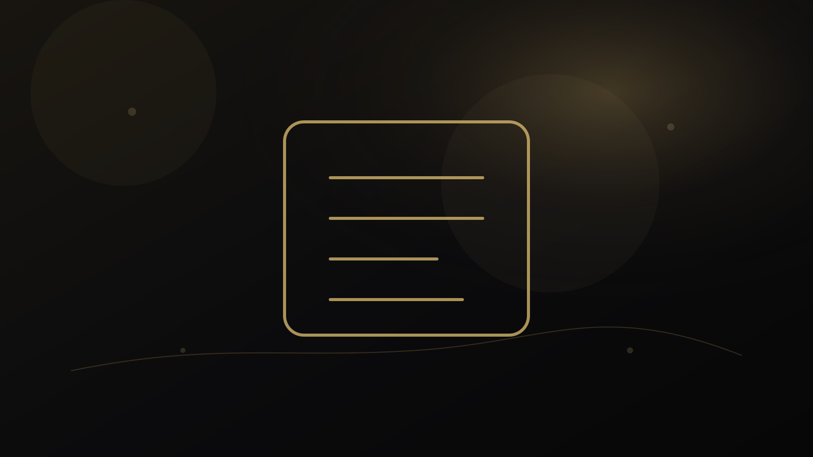
راهنمای پژوهش و انتشار
چگونه به کامنتهای داوران مقاله پاسخ دهیم؟ راهنمای حرفهای Response to Reviewers
راهنمای پاسخ حرفهای به داوران مقاله؛ تحلیل کامنتها، اصلاح متن، پاسخ نقطهبهنقطه، مدیریت اختلاف علمی و حفظ لحن حرفهای.
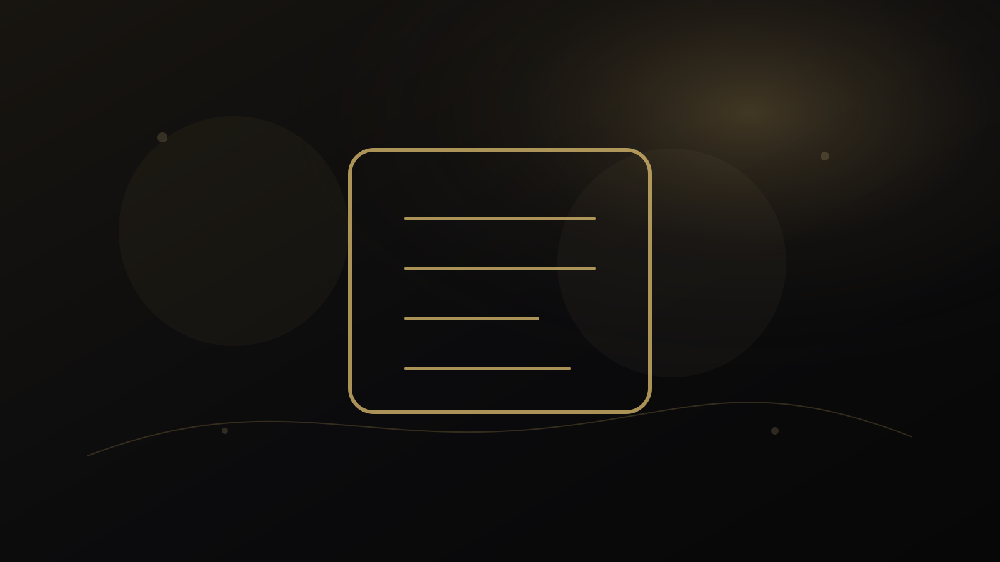
راهنمای پژوهش و انتشار
چگونه یک Academic CV حرفهای برای اپلای، دانشگاه و موقعیت علمی بنویسیم؟
راهنمای ساخت Academic CV حرفهای؛ انتخاب و سازماندهی شواهد پژوهش، تدریس، خدمات علمی و مهارتها متناسب با موقعیت دانشگاهی.
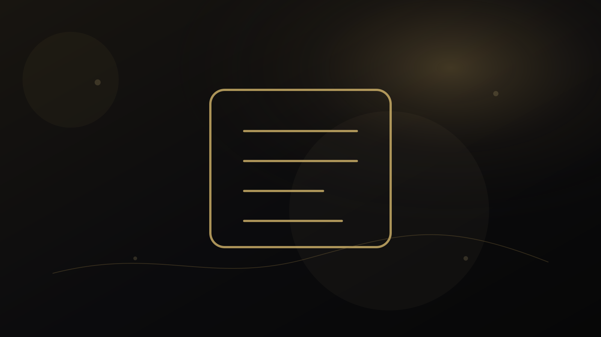
راهنمای پژوهش و انتشار
مصاحبه هیئت علمی و دانشگاهی؛ چه سؤالهایی مطرح میشود و چگونه آماده شویم؟
راهنمای آمادگی مصاحبه هیئت علمی و دانشگاهی؛ روایت پژوهش و تدریس، شواهد، پاسخ ساختاریافته، ارائه کوتاه و تمرین سناریوهای واقعی.
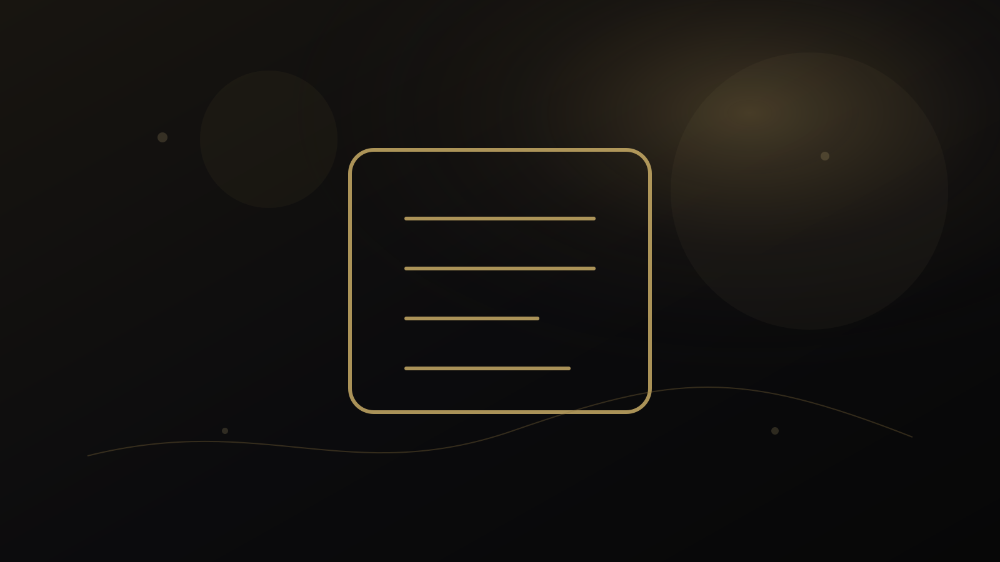
راهنمای پژوهش و انتشار
Desk Rejection چیست و چگونه احتمال رد اولیه مقاله را کاهش دهیم؟
Desk Rejection چیست؛ دلایل رایج رد مقاله پیش از داوری، از عدم تناسب مجله و ضعف مسئله تا قالب، تازگی و کیفیت ارائه.
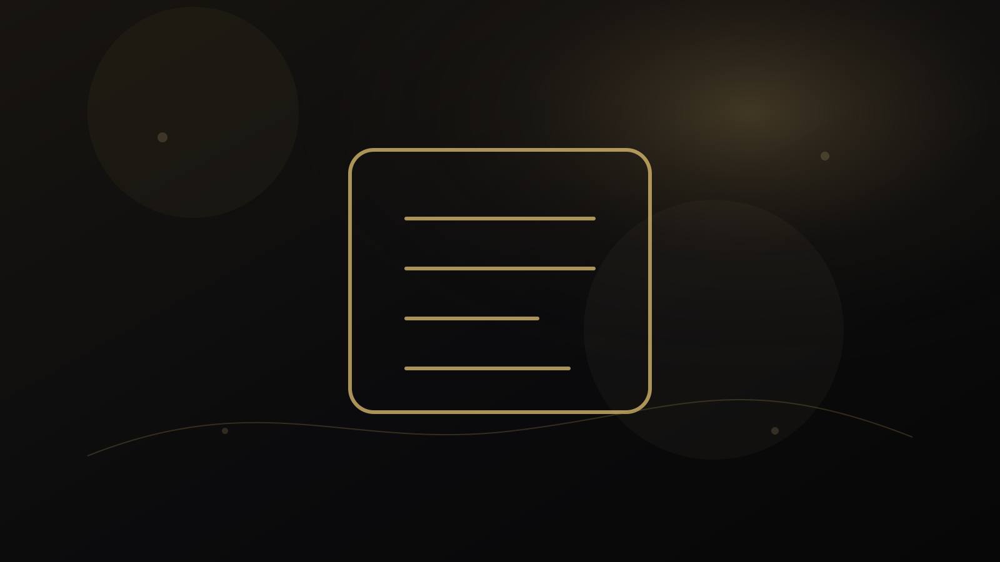
راهنمای پژوهش و انتشار
قبل از Submit مقاله چه چیزهایی را بررسی کنیم؟ چکلیست علمی و فنی پیش از ارسال
چکلیست پیش از Submit مقاله؛ از ادعا، ساختار و روش تا ethics، reference، فایلهای تکمیلی، cover letter و الزامات مجله.
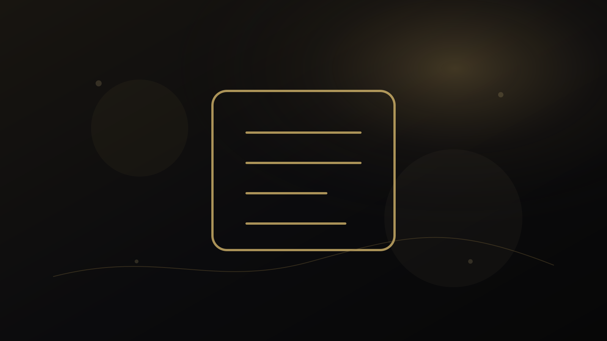
راهنمای پژوهش و انتشار
Major Revision دریافت کردهام؛ از کجا شروع کنم و چگونه بازنگری را مدیریت کنم؟
راهنمای مدیریت Major Revision؛ ساخت ماتریس کامنتها، اولویتبندی اصلاحات، هماهنگی نویسندگان و تهیه پاسخ علمی مرحلهبهمرحله.
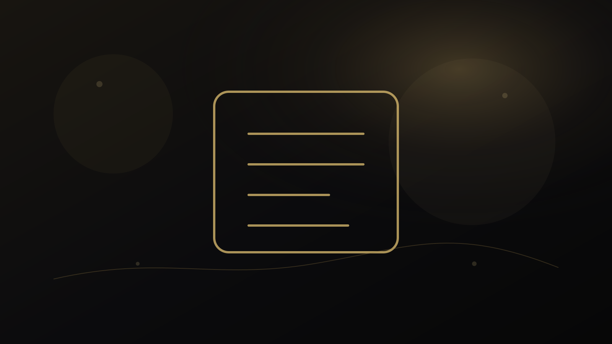
راهنمای پژوهش و انتشار
فرق Proofreading، Academic Editing و Manuscript Review چیست؟
تفاوت Proofreading، Academic English Editing و Manuscript Diagnostic Review؛ هرکدام چه مسئلهای را حل میکنند و چه زمانی انتخاب نادرست باعث اتلاف زمان میشود.
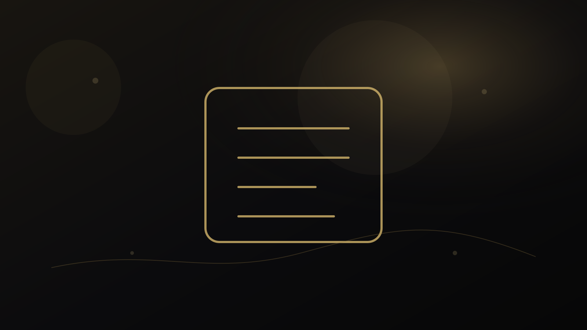
راهنمای پژوهش و انتشار
اشتباهات رایج پژوهشگران ایرانی در ارسال مقاله به مجلات بینالمللی
اشتباهات رایج در ارسال مقاله بینالمللی؛ انتخاب مجله، زبان، scope، cover letter، authorship، فایلها و پاسخ به تصمیم سردبیر.
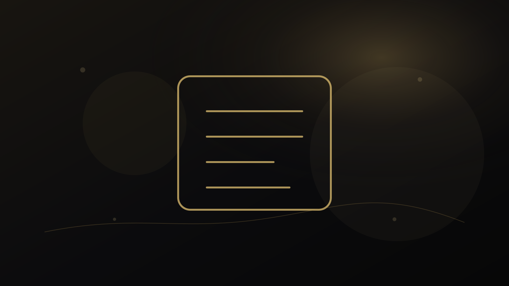
راهنمای پژوهش و انتشار
چگونه Scope مجله را با مقاله خود تطبیق دهیم؟
روش تطبیق مقاله با Scope مجله؛ از واژههای کلی صفحه Aims & Scope تا بررسی مقالات اخیر، مخاطب، روش و سطح contribution.
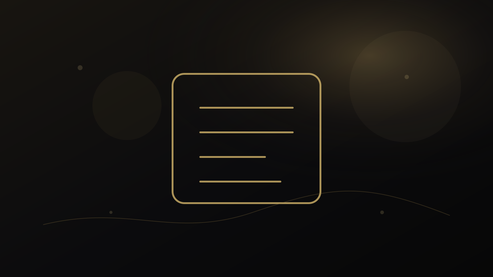
راهنمای پژوهش و انتشار
پرسش پژوهش خوب چگونه ساخته میشود؟ از موضوع کلی تا سؤال قابل بررسی
چگونه از یک موضوع کلی به پرسش پژوهش دقیق برسیم؛ دامنه، مفاهیم، بافت، شواهد مورد نیاز و رابطه سؤال با طراحی پژوهش.
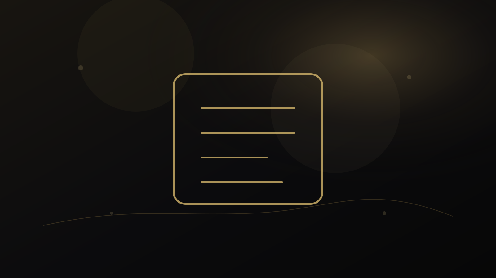
راهنمای پژوهش و انتشار
بعد از Reject مقاله چه کنیم؟ تشخیص علت و ساخت راهبرد ارسال مجدد
پس از Reject مقاله چگونه تصمیم بگیریم؛ تحلیل نامه سردبیر و داوران، تشخیص مشکل، اصلاح نسخه و انتخاب مسیر ارسال مجدد بدون واکنش عجولانه.

راهنمای پژوهش و انتشار
Academic CV چه تفاوتی با Resume دارد و کدام را برای موقعیت علمی بفرستیم؟
تفاوت Academic CV و Resume؛ طول، ساختار، نوع شواهد و کاربرد هرکدام برای دانشگاه، پژوهش، اپلای و فرصتهای حرفهای.
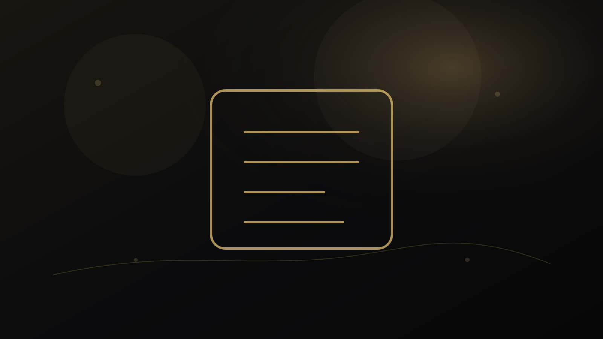
راهنمای پژوهش و انتشار
سؤالهای رایج مصاحبه هیئت علمی را چگونه تمرین کنیم؟
چارچوب تمرین سؤالهای مصاحبه هیئت علمی؛ معرفی خود، برنامه پژوهش، تدریس، سناریوهای حرفهای و پاسخ مبتنی بر شواهد بدون حفظکردن متن.
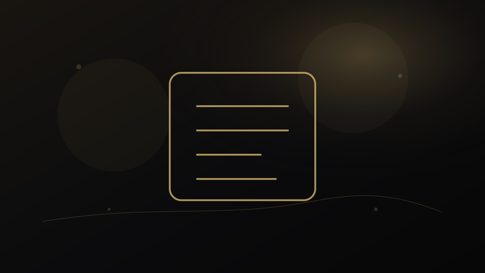
راهنمای پژوهش و انتشار
Cover Letter مقاله چیست و هنگام Submit چه چیزهایی باید در آن بنویسیم؟
راهنمای Cover Letter برای ارسال مقاله؛ معرفی کوتاه manuscript، تناسب با مجله، originality، declarations و پرهیز از ادعاهای تبلیغاتی.
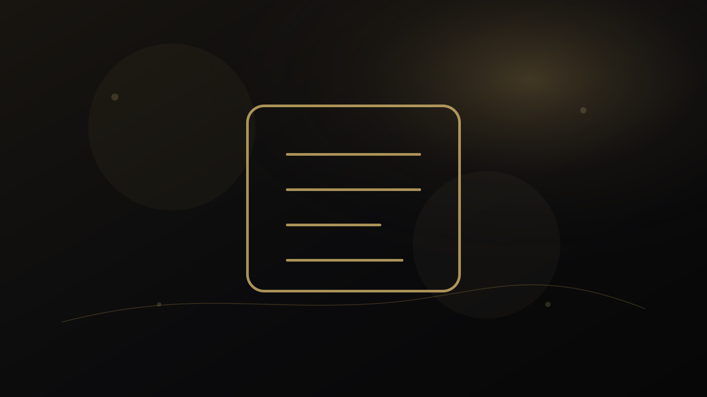
راهنمای پژوهش و انتشار
چکیده مقاله علمی چگونه باید نوشته و بازبینی شود؟
راهنمای بازبینی Abstract مقاله؛ مسئله، هدف، روش، یافته کلیدی و پیام اصلی چگونه در محدودیت کلمات روشن و متناسب با متن اصلی ارائه شوند.